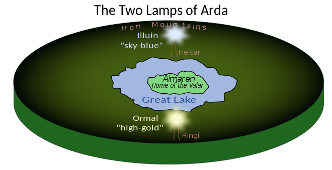
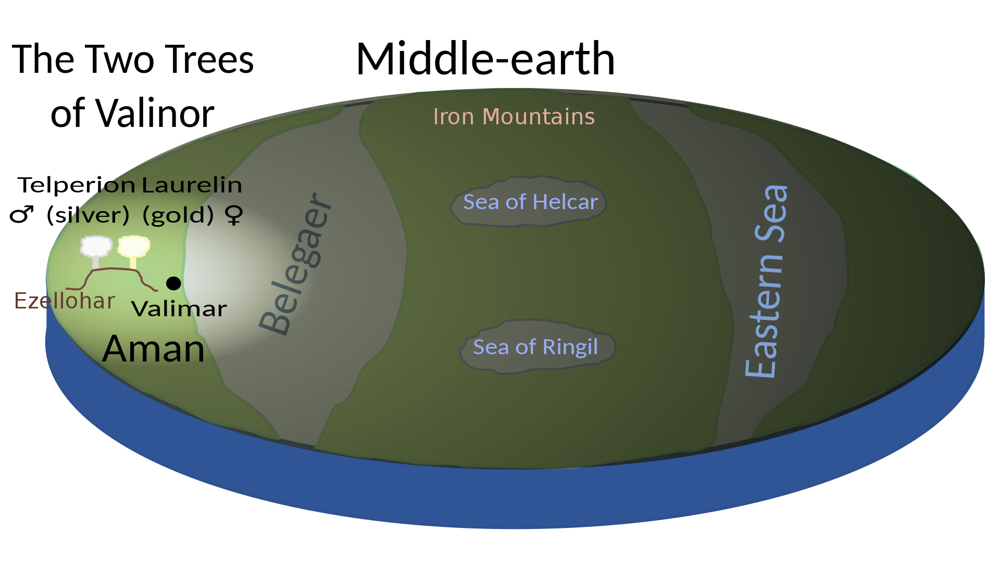
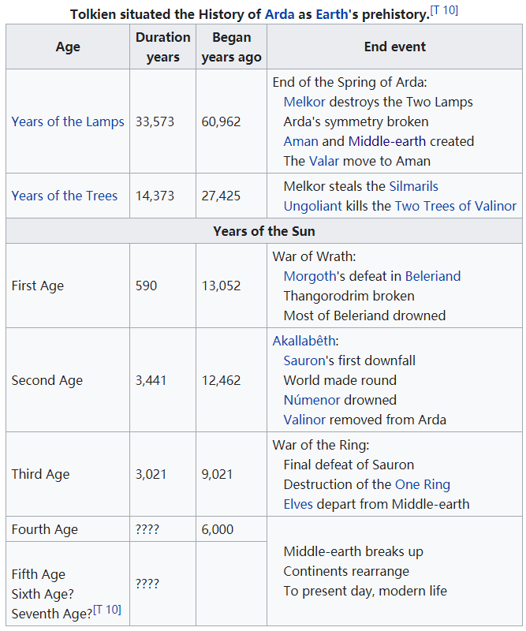
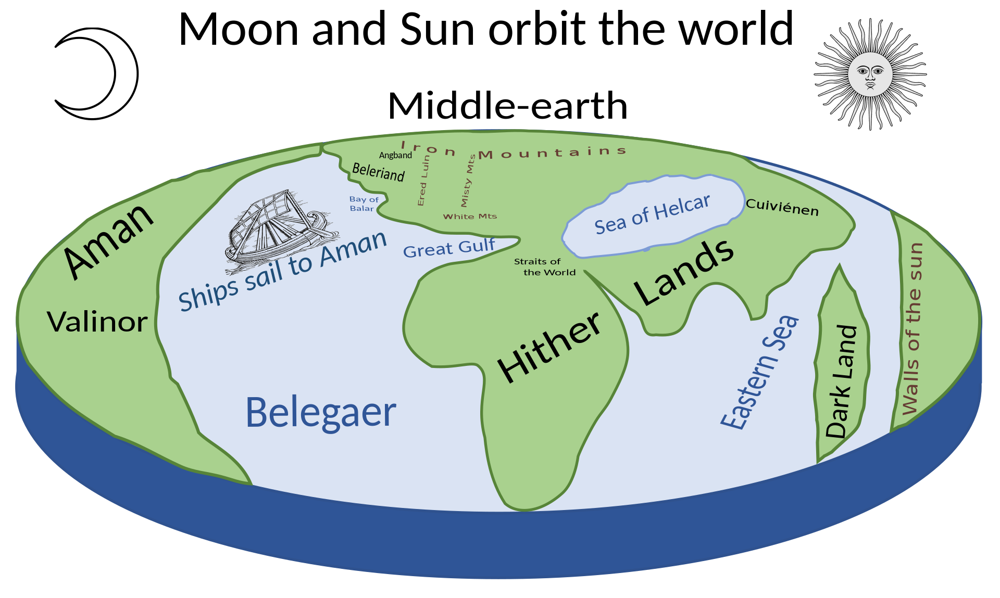
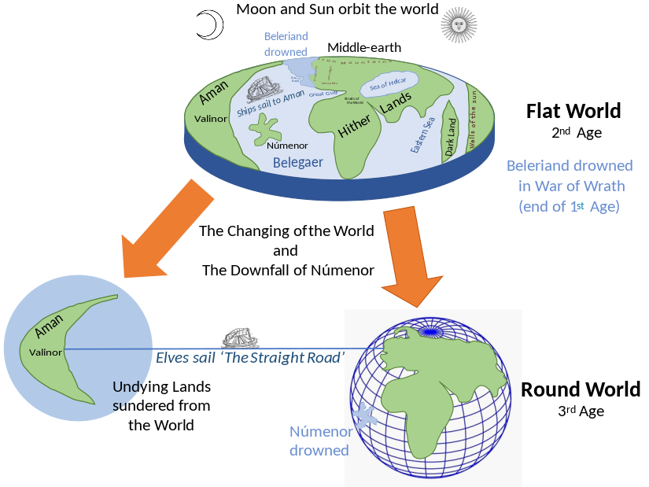

"Home is behind, the world ahead, and there are many paths to tread through shadows to the edge of night,
until the stars are all alight."
John Ronald Reuel Tolkien (3 January 1892 – 2 September 1973). English linguist (born in Bloemfontein, Orange Free State), university professor (Leeds and Oxford), Anglo-Saxon historian, CBE, and writer.
The man who brought High Fantasy (and, it could be argued, literary Speculative Fiction as a whole) to the modern public. He is mainly known for his tales of "Middle-earth", most famously The Hobbit and its sequel The Lord of the Rings.
Most of his fiction in this setting has been published posthumously, despite most of it being written earlier than his most well-known books.
The Realm Of Middle Earth
Characters
The protagonist of The Lord of the Rings. He was a hobbit of the Shire who inherited Sauron's Ring from his uncle (technically, cousin once removed) and adoptive father Bilbo Baggins and undertook the quest to destroy it in Mount Doom.
Learn MoreAn Elf of the Woodland Realm in northern Mirkwood in the east of Middle-earth. He is the son of King Thranduil of Mirkwood and a Prince of the Woodland Realm as well as a swift messenger and master bowman.
Learn MoreAs the heir of Elendil, and the first High King of Arnor and Gondor, Aragorn is the rightful king of both realms, though Arnor fell long ago, and Gondor has been without a king for nearly 1000 years.
Learn MoreA wizard who assisted both Bilbo and Frodo in their quests across Middle-Earth. Gandalf is a member of the Istari, a group of Maiar that were specially chosen by the Valar to aid the Free Peoples of Middle-Earth in the fight against evil.
Learn MoreTimeline
Main articles: Ainulindalë and Cosmology of Middle-earth
The supreme deity of Tolkien's universe is Eru Ilúvatar. Ilúvatar created spirits named the Ainur from his thoughts, and some were considered brothers or sisters.
Ilúvatar made divine music with them. Melkor, then the most powerful of the Ainur, broke the harmony of the music, until Ilúvatar began first a second theme, and then a third theme, which the Ainur could not comprehend since they were not the source of it.
Spring of Arda
When the Valar entered Arda, it was still lifeless and had no distinct geographical features. The initial shape of Arda, chosen by the Valar, was much more symmetrical, including the central continent of Middle-earth.
Ilúvatar made divine music with them. Melkor, then the most powerful of the Ainur, broke the harmony of the music, until Ilúvatar began first a second theme, and then a third theme, which the Ainur could not comprehend since they were not the source of it.
The essence of their song symbolized the history of the whole universe and the Children of Ilúvatar that were to dwell in it—Men and Elves.Then Ilúvatar created Eä, which means "to be," the universe itself, and formed within it Arda, the Earth, "globed within the void": the world together with the three airs is set apart from Avakúma, the "void" without. The first 15 of the Ainur that descended to Arda, and the most powerful ones, were called Valar; the lesser Ainur were called Maiar.
Years of the Trees
Shortly after the destruction of the Two Lamps and the kingdom of Almaren, the Valar abandoned Middle-earth, moving to the continent of Aman.
here they built their Second Kingdom, Valinor. Yavanna made the Two Trees, named Telperion (the silver tree) and Laurelin (the golden tree) in the land of Valinor.
The Trees illuminated Valinor, leaving Middle-earth in darkness lit only by stars. The Years of the Trees were contemporary with Middle-earth's Sleep of Yavanna (recalled by Treebeard as the Great Darkness).
Years of the Sun
The Years of the Sun were the last of the three great time-periods of Arda. They began with the first sunrise in conjunction with the return of the Noldor to Middle-earth, and last until the present day.
The Years of the Sun began towards the end of the First Age of the Children of Ilúvatar and continued through the Second, Third, and part of the Fourth in Tolkien's stories. Tolkien estimated that modern times would correspond to the sixth or seventh age.
The Trees illuminated Valinor, leaving Middle-earth in darkness lit only by stars. The Years of the Trees were contemporary with Middle-earth's Sleep of Yavanna (recalled by Treebeard as the Great Darkness).
First Age
The First Age of the Children of Ilúvatar, also referred to as the Elder Days in The Lord of the Rings, began during the Years of the Trees when the Elves awoke at Cuiviénen, and hence the events mentioned above under Years of the Trees overlap with the beginning of the First Age.
Having crossed into Middle-earth, Fëanor was soon lost in an attack on Morgoth's Balrogs—but his sons survived and founded realms, as did the followers of his half-brother Fingolfin, who reached Beleriand after Fëanor's death.
The Eldar, Edain and the Dwarves were defeated in the Nírnaeth Arnoediad or Battle of Unnumbered Tears, and one by one, the kingdoms fell, even the hidden ones of Doriath and Gondolin.
Second Age
The Second Age is characterized by the establishment and flourishing of Númenor, the rise of Sauron in Middle-earth, the creation of the Rings of Power and the Ringwraiths, and the early wars of the Rings between Sauron and the Elves. It ended with Sauron's defeat by the Last Alliance of Elves and Men.
"The Tale of Years" in Appendix B of The Lord of the Rings outlines the major events of the Second Age, especially as they relate to the Rings of Power and the events and characters of The Lord of the Rings.
Third Age
The Third Age lasted for 3021 years, beginning with the first downfall of Sauron, when he was defeated by the Last Alliance of Elves and Men following the downfall of Númenor and ending with the War of the Ring and final defeat of Sauron, the events narrated in The Lord of the Rings. Virtually the entire history of the Third Age takes place in Middle-earth.
The Third Age saw the rise in power of the realms of Arnor and Gondor, and their fall. Arnor was divided into three petty Kingdoms, which fell one by one in the wars with Sauron's vassal kingdom of Angmar, whilst Gondor fell victim to Kin-strife, plague, Wainriders, and Corsairs.
In this time, the line of the Kings of Gondor ends, with the House of the Stewards ruling in their stead. Meanwhile, the heirs of Isildur from the fallen kingdom of Arnor wander Middle-earth, aided only by Elrond in Rivendell; but the line of rightful heirs remains unbroken throughout the age.
Fourth Age
With the end of the Third Age began the Dominion of Men. Elves were no longer involved in Human affairs, and most Elves leave for Valinor; those that remain behind "fade" and diminish.
A similar fate meets the Dwarves: although Erebor becomes an ally of the Reunited Kingdom and there are indications Khazad-dûm is refounded, and a colony is established by Gimli in the White Mountains, they disappear from human history. Morgoth's creatures never recover.
Dagor Dagorath
In a letter, Tolkien wrote that "This legendarium [The Silmarillion] ends with a vision of the end of the world [after all the ages have elapsed], its breaking and remaking, and the recovery of the Silmarilli and the 'light before the Sun' – after a final battle [Dagor Dagorath] which owes, I suppose, more to the Norse vision of Ragnarök than to anything else, though it is not much like it."
The concept of Dagor Dagorath appears in Tolkien's manuscripts that were published by his son Christopher in The Shaping of Middle-earth but not in the published Silmarillion, where the eventual fate of Arda Marred is left open-ended in the closing lines of the Quenta Silmarillion.
FanWorks
"But now comes the day, to bid you farewell.
I bid you all a very fond farewell."
Rest in peace, Sir J. R. R. Tolkien ♡
3 January 1892 – 2 September 1973 †
Rest in peace, Sir Ian Holm Cuthbert ♡
12 September 1931 - 19 June 2020 †
Rest in peace, Sir Christopher Lee ♡
27 May 1922 - 7 June 2015 †
Rest in peace, Sir Andrew Jack ♡
28 January 1944 – 31 March 2020 †
username@xx.com
Beverly Hills
Los Angeles, US, 10041NY212